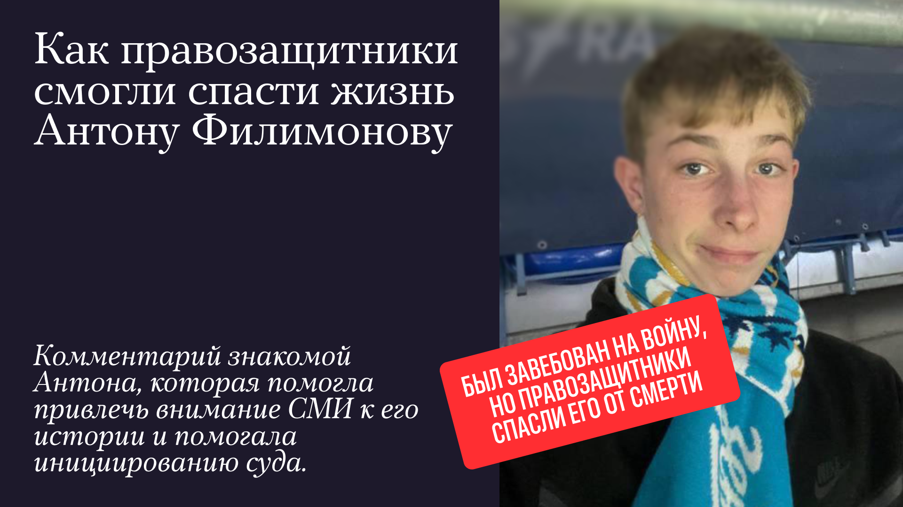

Работа редакции
Подготовка текстов, редактура, проверка фактов, работа сайта и каналов проекта.
Независимое медиа · Россия
О цензуре и жизни в России.
Честно, внимательно, без самоцензуры.
«Центр Ц.» — идейный проект. Мы не просим донатить из обязанности: если вам близка наша работа, поддержка поможет нам продолжать говорить о важном.
Подписаться в Telegram ↗У нас нет инвесторов и государственных грантов — только читатели, которым важна независимая редакция.
Донаты помогают нам планировать работу и выпускать материалы, которые требуют времени, внимания и независимости.
Подготовка текстов, редактура, проверка фактов, работа сайта и каналов проекта.
Разговоры с правозащитниками и героями, чьи истории важно услышать и сохранить.
Понятные материалы о выборах, правах и о том, как защитить свой голос.
Мы уже выпускаем материалы, которые помогают увидеть важное, разобраться в происходящем и действовать осознанно.

Видео
Рассказали, как правозащитники помогли спасти жизнь Антону Филимонову, привлекли внимание к его истории и добились судебного разбирательства.

Памятка
Собрали понятную инструкцию: как подготовиться к голосованию, проверить бюллетень, сохранить тайну выбора и сообщить о возможных нарушениях.
Мы ценим ваше доверие и открыто рассказываем, как устроена поддержка «Центра Ц.».
По информации редакции, «Центр Ц.» не имеет статуса иностранного агента, не признан нежелательной или экстремистской организацией. Поддержка проекта — добровольное пожертвование независимой редакции. Если вам необходима оценка вашей личной ситуации, лучше предварительно обратиться к юристу.
На работу редакции: подготовку материалов, оплату сервисов, развитие сайта и Telegram-канала, а также на новые специальные проекты. Ваша поддержка даёт нам возможность планировать работу и оставаться независимыми.
Любую комфортную для вас. Разовый донат помогает уже сегодня, а регулярный — делает работу редакции устойчивее. Главное для нас — ваше участие и доверие.
CloudTips подойдёт для российских карт, Patreon — для платежей в других валютах. Выберите вариант, который удобен именно вам.
Да. Платёжные сервисы не публикуют данные вашей карты. При желании укажите нейтральное имя в профиле и выберите привычный для вас способ оплаты.